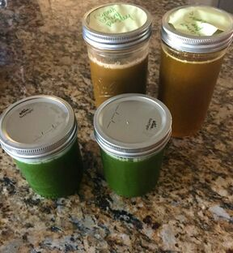
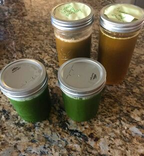

8 Easy Juice Recipes to Get You Started Juicing | Wholefully
2021.06.18 12:40
Free Starter Guide Start Here About Shop Contact The Latest Food Recipe Search Meal Prep Canning + Preserving Home + Garden Organic Gardening Crafts & DIY Wellness Self Care Home Remedies Resprout Privacy Policy Work For Wholefully Start Here About Contact The Latest Free Starter Guide Healthy Eating Made Deliciously Simple Food Recipe Search Meal Prep Ideas Canning + Preserving Home + Garden Organic Gardening Crafts & DIY Gift Guides Wellness Self Care Home Remedies Natural Beauty
8 Easy Juice Recipes to Get You Started Juicing
Wholefully » Food » 8 Easy Juice Recipes to Get You Started Juicing By Cassie Johnston This post is brought to you by a Wholefully partner.Share this post:
Share on Facebook Save to Pinterest Email to a FriendHave you guys gotten into juicing yet? If you haven’t, you should try it! It’s a fun and tasty way to pack a ton of healthy nutrients into a drinkable treat that’ll make you feel great.
Now, a lot of folks out there think of juicing as a replacement for whole foods—I don’t agree with that. I believe that whole foods (and the fiber that comes along with them) are vital part of a healthy diet. I don’t recommend using fruit or vegetable juices as a replacement for food.
Instead, I think adding all-natural, unsweetened fruit and vegetable juice to help supplement your diet is a great idea. It’s not better than whole foods, it’s just different . And sometimes, that’s all we need to help us keep up with a healthy diet.
As with everything, if it makes you and your family feel good, then do it. If it doesn’t? Skip it! For me personally, I see some real differences in the way I feel when I’m consistently juicing—I assume mostly because my overall consumption of fruits and veggies is up. My skin is brighter and clearer, and I tend to get sick less often. For me, juicing is a great way to kickstart healthy momentum.
If you’re just starting out with juicing, the first thing you’ll need is well a juicer! There are two main kinds of juicers out there—centrifugal (AKA: fast) and masticating (AKA: slow or cold-press) juicers.
The typical juicer you grab from the big box store is probably a centrifugal juicer. The disadvantages of these kind of juicers are pretty numerous—they aren’t very efficient at extracting juice, they don’t do well juicing leafy greens, they are loud as all get out, and some of these juicers get hot enough that they actually break down of the nutrients in the juice.
The advantage of these kind of juicers? They are very affordable—you can grab one for about $40. If you only want to juice occasionally and not for nutrition purposes (like say for cooking or baking), a centrifugal juicer will do you fine.
However, if you really want to get into juicing and get the most flavor and nutrients out of your fruits and veggies, a slow juicer is the way to go. The “slow” is a bit of a misnomer, because while slower than a centrifugal juicer, slow juicers are still very fast.
They are quiet, easy-to-clean, and really give you best quality juice. The drawback? They aren’t cheap. In fact, to get a good quality slow juicer (like the Hurom I have and recommend), you’re going to be spending upwards for $400. But if you plan on juicing regularly, it’ll be money well spent. And since my Hurom is so powerful, I can do a lot more than just juice in it—I regularly use it to make nut milks, smoothies (it comes with a separate strainer just for making smoothies), and to help me with canning. It’s an appliance that has earned a coveted spot on my kitchen counter!
When I first started juicing, I felt really intimidated by all the crazy combos out there—I mean just in the grocery store alone, you see some bottles of juice with a million different ingredients. 2 1/2 strawberries here, 2/3 of a mango there, 27 blueberries. Who counts blueberries!?!
I thought I’d pull together eight of my favorite simple juice recipes to get you started. These juice recipes all use easy-to-find fruits and veggies, and most of the juices have less than three ingredients. They are all sweetened naturally with fruit, so you know they taste great! These are a great way to get your feet wet with juicing. Let’s get started!
If you’re looking to start adding green juice to your diet, this is a great place to start. Cucumbers and celery are both packed with water, making them excellent candidates for juicing. And green apple adds tons of sweetness and fruity flavor to the juice. This juice is super refreshing and hydrating—perfect for summer!
Like the spicy kick of ginger? Well then this recipe is for you. The sweetness of carrots and apples are a great balance to the heat of ginger.
Get your nutrients from dark, leafy greens all while drinking juice that tastes like the tropics! This is one of the juice recipes that is not recommended for centrifugal juicers, which will not be able to properly juice banana or kale leaves. I recommend using a Hurom HH Elite juicer .
The earthiness of beets is balanced out by sweet and fruity berries in this brightly purple juice. If regular purple beets are a bit too strong of a flavor for your tastes, try golden beets, which are sweeter and more mild in flavor.
Feeling under the weather? Send a power boost to your immune system with the germ-fighting combo of lemon, orange, and ginger.
This juice combines two different types of apples to create a fun and healthy twist on traditionally apple juice. This is one of the juice recipes that is not recommended for centrifugal juicers, which will not be able to properly juice spinach leaves. I recommend using a Hurom HH Elite juicer .
Start your day off right with this fruity juice packed fruits and veggies!This is one of the juice recipes that is not recommended for centrifugal juicers, which will not be able to properly juice banana or kale leaves. I recommend using a Hurom HH Elite juicer .
Bright and fruity, this juice shows off how awesome melons are in fruit and vegetable juices. For a fun, refreshing twist, add in a leaf or two of fresh mint.
8 Easy Juice Recipes to Get You Started Juicing
Yield: 12 ounces Prep Time: 3 minutes Total Time: 3 minutesIf you're just starting out juicing, try out these 8 easy juice recipes - they pack in tons of fruits and veggies in one glass!
Ingredients
For Green Goddess Juice:
3 stalks of celery 1/2 large cucumber, cut into quarters 1 medium green apple, cut into eighths 1 medium pear, cut into eighthsFor Ginger Zinger Juice:
2 medium apples, cut into eighths 5 carrots (no need to peel) 1/2 inch fresh ginger 1/4 lemon (remove peel to avoid bitterness)For Tropi-Kale Juice:
1/4 of a fresh pineapple, skin and core removed, and cut into 1” strips 4 kale leaves 1 ripe banana, peeledFor Antioxidant Blast Juice:
2 medium beets, cut into quarters and the greens 1 cup blueberries 1 cup halved, hulled strawberriesFor Immune Booster Juice:
2 oranges, quartered (remove peel for less bitterness) 1/4 lemon (remove peel for less bitterness) 1 medium apple, cut into eighths 1/2” fresh gingerFor Not-So-Sour Apple Juice:
2 tart apples, cut into eights 5 kale leavesFor Kale Kickstart Juice:
1 orange, quartered (remove the peel for less bitterness) 1 cup halved and hulled strawberries 2 kale leaves 3 carrots 1 ripe bananaFor Cucumber Cooler Juice:
1/4 ripe cantaloupe, seeds removed, cut into chunks (no need to peel) 2 stalks celery 1/2 cucumber, cut into slices 1/4 lemon (remove peel to reduce bitterness)Instructions
For All Flavors:
Juice all the ingredients following the instructions for normal juicing in your juicer manual. Drink immediately, or let chill for an hour and then enjoy. © Cassie Johnston Category: DrinksHappy juicing!
This post is brought to you by a Wholefully partner.This is a sponsored post written by me on behalf of Hurom. All opinions are entirely my own. Learn more about Hurom by visiting their website or following them on Twitter , Facebook , Pinterest , or Instagram .
Want to be a sponsor? Let’s work together !
Cassie Johnston
Cassie is the founder and CEO of Wholefully. She's a home cook and wellness junkie with a love of all things healthy living. She lives on a small hobby farm in Southern Indiana with her husband, daughter, two dogs, two cats, and 15 chickens. More posts by Cassie Johnston 10+ Delicious Summer Squash Recipes Easy Iced Mocha Recipe with DIY Mocha Syrup 3 Ingredient Oatmeal Raisin Cookie Snack BitesShare This Post
looking for more?
Try these
all-natural beet juice red food coloring cucumber limeade strawberry-lime mojitos 34+ Sweet and Savory Pumpkin Recipes to Enjoy this Falllike what you just read?
Subscribers get first access to new content, exclusive recipes, giveaways, tons of freebies, behind-the-scenes updates, and a TOTALLY FREE EBOOK just for signing up!
At Wholefully, we believe
vibrant, glowing health
is your birthright.
The free Living Wholefully Starter Guide is packed full of tips, tricks, recipes, and a 14-day meal plan to get you started on the road to vibrant health.
Get Your Starter Guide → Meet Your HostHello. My name is Cassie, and I’m a healthy home cooking expert.
I'm a Certified Holistic Nutritionist, and I've been developing healthy recipes professionally for over 15 years. Food is my love language, and my kitchen tips and nourishing recipes are my love letter to you!
Learn More About Me →
FREE ebook!Live Wholefully Starter Guide
In this totally free (yup!) digital book, I share with you everything you need to get started living the Wholefully life—clean eating, green beauty, natural home, self-care, mental health—we cover it all!
In This Book:
14-day action plan Full menu plan (with grocery lists) Recipes to get you started Products I recommend My personal tips, tricks, and love
And lots more goodness!
download now → FREE ebook! Home About Start Here Food Home + Garden Wellness Contact Privacy Policy Cookie Policy Disclosures Wholefully is a registered trademark of Back to Her Roots, LLC
Copyright © 2010–2021 Back to Her Roots, LLC. All rights reserved.
Hey, read this!
Many outgoing links on Wholefully are affiliate links. If you purchase a product after clicking an affiliate link, I receive a small percentage of the sale for referring you, at no extra cost to you. Wholefully/Back to Her Roots, LLC is a participant in the Amazon Services LLC Associates Program, an affiliate advertising program designed to provide a means for sites to earn advertising fees by advertising and linking to Amazon.com.
Any specific health claim or nutritional claims or information provided on the website are for informational purposes only. Nothing on the website is offered is intended to be a substitute for professional medical, health, or nutritional advice, diagnosis, or treatment. See full disclosures »
Work With WholefullyVisit our organic gardening sister site: Growfully
Skip to Recipe- FREE Juice Recipes from Jason Vale - Juice Master
- Healthy Juice Recipes & Challenges | JuiceRecipes.com
- 21 Juicing Recipes for Healthy Mornings and Afternoon .
- Beginner Juice Recipe - Simply Jillicious
- Best Juicing Recipes for Beginners - Clean Eating Kitchen
- 20+ Juice Cleanse Recipes | Allrecipes
- Healthy Juicing Recipe Ideas : Food Network | Healthy .
- 6 Healthy Juicing Recipes for Cleanse, Detox, Weight Loss .
- Healthy Juice Cleanse Recipes – Modern Honey
- 8 Easy Juice Recipes to Get You Started Juicing | Wholefully
- FREE Juice Recipes from Jason Vale - Juice Master
- Healthy Juice Recipes & Challenges | JuiceRecipes.com
- 21 Juicing Recipes for Healthy Mornings and Afternoon .
- Beginner Juice Recipe - Simply Jillicious
- Best Juicing Recipes for Beginners - Clean Eating Kitchen
- 20+ Juice Cleanse Recipes | Allrecipes
- Healthy Juicing Recipe Ideas : Food Network | Healthy .
- 6 Healthy Juicing Recipes for Cleanse, Detox, Weight Loss .
- Healthy Juice Cleanse Recipes – Modern Honey
- 8 Easy Juice Recipes to Get You Started Juicing | Wholefully
 
